TopSource
Work location: Remote work
Portico HRMS System
An HR suite where every role finishes its daily tasks in fewer steps.
- Client
- TopSource Worldwide, for its Portico HR and payroll suite
- My role
- Senior Designer: design direction, and the cohesion of every design element through implementation
- Team
- 4 designers
- Timeline
- Oct 2021 to Apr 2022
- Platform
- Web, iOS and Android
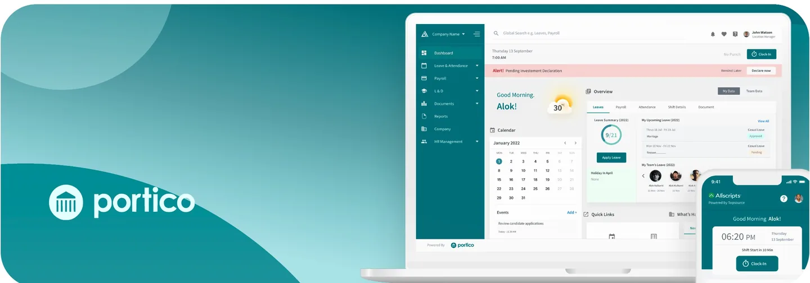
Impact
- 30%
- Fewer steps across core admin tasks, after the navigation was regrouped.
- 4 roles
- Employee, manager, HR and admin, each with a home built around their own day.
- 1 tap
- To apply for leave or approve a request, where it used to take a trip through the menu.
01 · The team
TopSource came to us with an app that looked dated and had a navigation structure that was hard to follow. Four of us at PeepalDesign split the work:
- Senior Designer · me
- Set the design direction, and oversaw implementation so every design element held together as one product across web and mobile.
- Lead UX Designer
- Planned the project workflow, from refining the information architecture to enhancing features.
- Two designers
- Designed the screens for every case, and built the prototype we presented to the client.
02 · What made it hard
Portico had grown feature by feature, and every task took too long.
Developers had built the suite organically to meet each client's requests, with little time left for the experience. Portico covers HR, payroll, documents, expenses, recruitment and learning, with access tiers for employees, managers and senior managers.
- A menu in build order
- Common tasks sat several levels deep, with no search and no in-app guidance.
- Every screen looked different
- Inconsistent layouts, icons and button weights, low contrast, and a loader on every action.
- Four roles, one set of screens
- Employees clock in and apply for leave. Managers approve and check their team. HR and admins run people, documents and company data.
- A mobile copy of the web
- The app tried to do everything the website did, instead of what people need on the move.

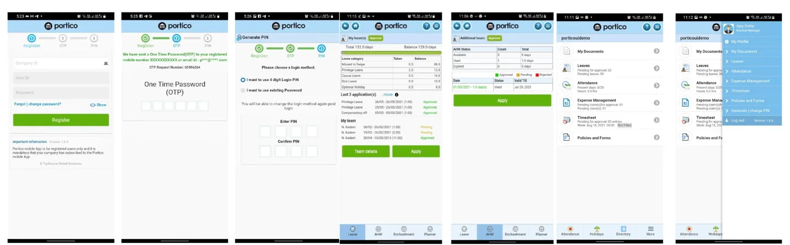
03 · The approach
Six phases took the project from definition to delivery, each one widening the problem and then narrowing it down.

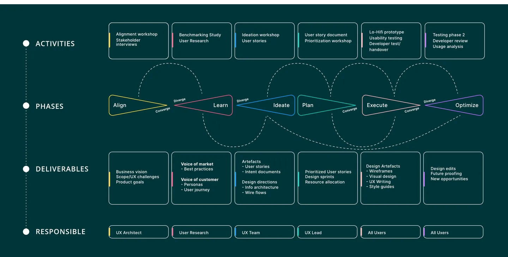
04 · How we got there
-
1
Align: a stakeholder workshop
We started by getting everyone at TopSource to agree on what the redesign had to achieve.
The workshop gathered what the company already knew (customer reviews, perception, known problems), the user segments it had and wanted, and the stakeholders' hopes and fears for the work.
It set the targets: one consistent experience across every module, a stronger platform for managers, and half the support queries about finishing tasks. Success would show as fewer support tickets, more referrals, better app store ratings and shorter training. TopSource asked for a mobile-first approach in two phases.
-
2
Learn: an expert review of the old app
Before changing anything, we walked through the existing mobile app screen by screen.
The review found fifteen problems. The biggest ones:
- Every screen looked different, which confused people
- Low contrast, dull colours and fonts without clear hierarchy
- No search, no tabs or in-app guidance, and no hand-holding
- A loader on every single action
- Complex, inconsistent icons and too many clicks per task
-
3
Learn: proto-personas
From the workshop we built proto-personas for the two people who use Portico most differently.
Employee · mobile first
Punctual Vikas
35, visual designer, Pune. Helpful and city-savvy, but not very technical.
Goals
- Mark attendance and take leave
- Get payslips and file IT declarations
- Reach his information from anywhere
Pain points
- No help centre or FAQ
- Cannot tell who in his team is on leave
- Too many options on every screen
HR manager · computer first
Perfectionist John
40, HR manager, UK. Every employee complaint runs through him, and he sets policy.
Goals
- Run reports for a sub-company or the whole group
- Find any employee without running a report
- Approve leave and shifts for his team
Pain points
- Reports and dashboards are hard to reach
- Modules are not connected, so leave and performance live apart
- No bulk approvals, and no time to spare
-
4
Ideate: information architecture
We rebuilt the structure around how people think about their work, not the order features were built in.
Login leads to a landing page with a dashboard (information feed, calendar, reminders and quick access to frequent tasks), plus profile, support and admin. Everything else sits under one main navigation.
- Leaves & Attendance
- Payroll
- Documents
- Reports
- Company
- Learning & Development
- Employee management
-
5
Plan: card sorting
Card sorting showed us how to group and label the modules so people could find them.
It shaped the regrouped menu on both web and mobile, and pointed to global search and a shortcut to frequently used tasks.
-
6
Plan: wireflows
Wireflows joined the screens into journeys, so stakeholders could see each path before any visual design.
On mobile we traced the dashboard to team lists and employee details. On web we mapped the full leave module: applying, encashment, extra work hours, the leave planner and policies.
-
7
Execute: wireframes, style guide and visual design
Grayscale wireframes got feedback on structure first. Then one style guide carried every screen.
A teal-led palette, Source Sans Pro and one outline icon set, shared by web and mobile, with a light and a dark mode.
Primary teal
#03586C
Soft teal
#83C5BE
Slate
#8692A6
Grey
#696F79
Highlight
#FEC514
Ink
#2E3D42
-
8
Optimize: testing and handover
We tested the new navigation with users, reviewed builds with the developers and handed over the designs.
Early testing showed the new navigation helped people find information and finish tasks.

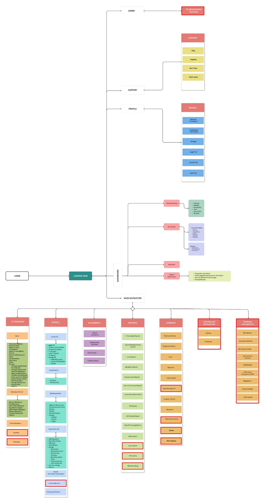

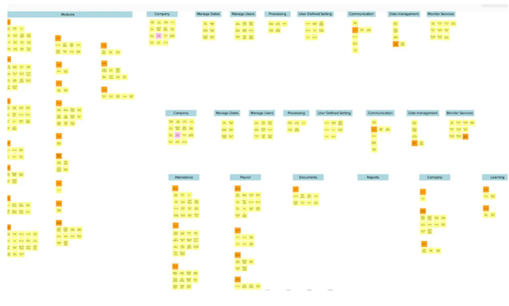

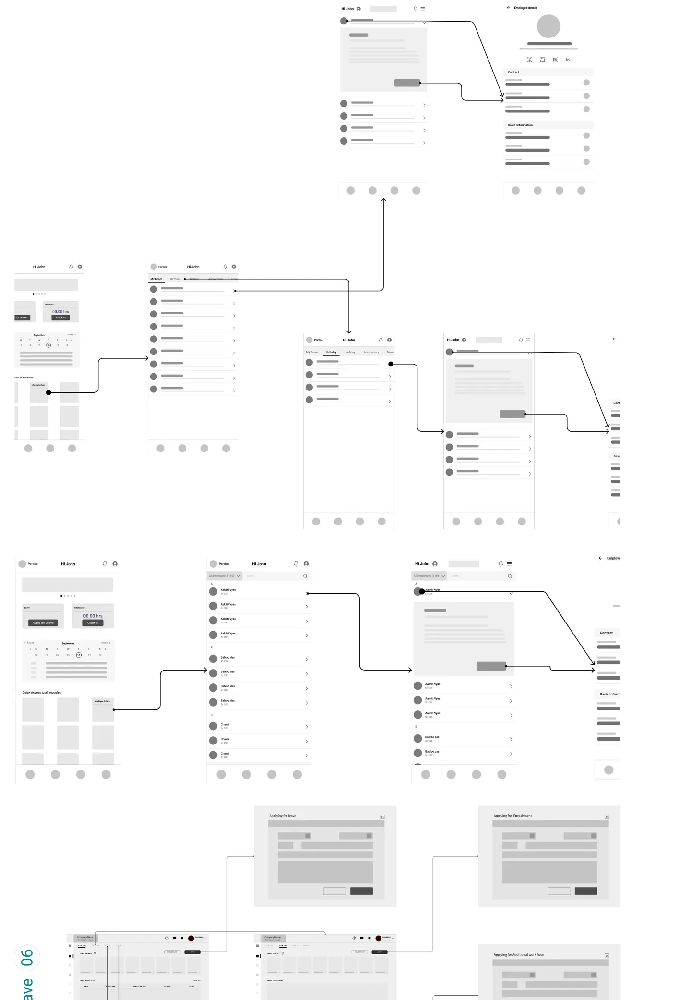

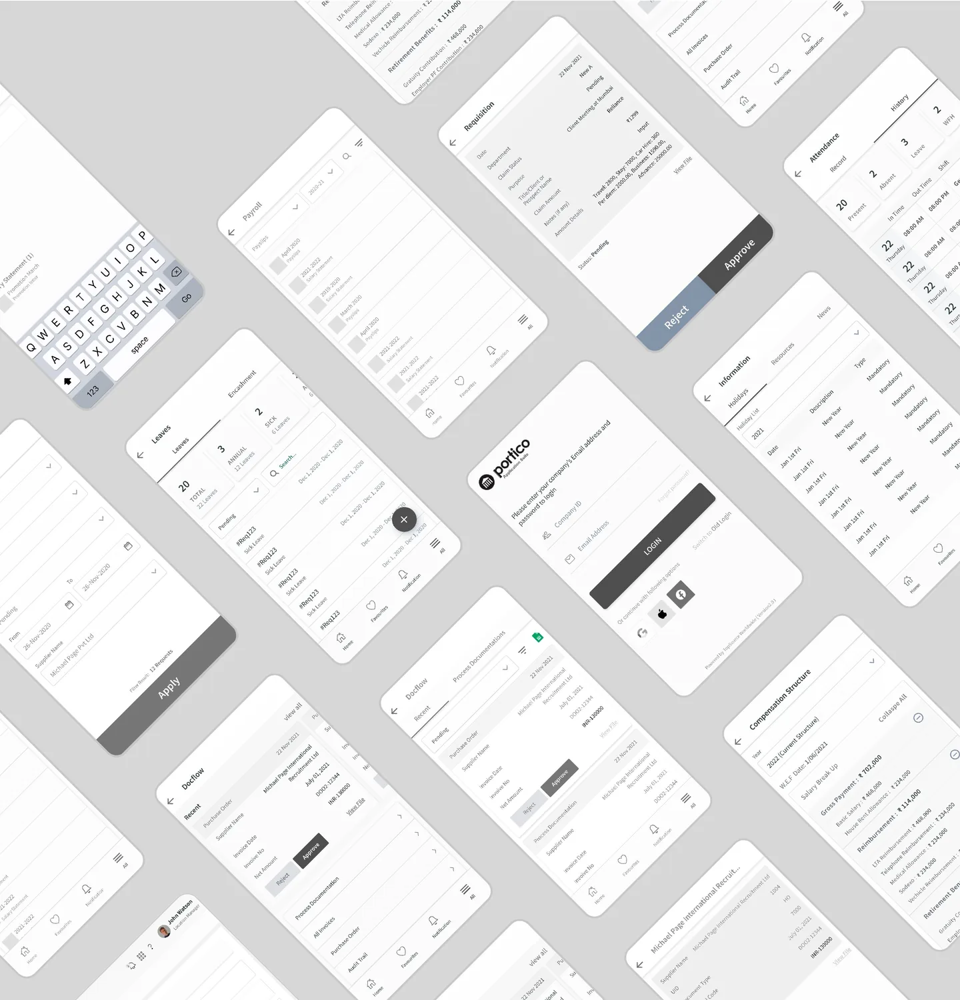
05 · Key decisions
Four choices shaped the product. Keeping them consistent across web and mobile was my main job through implementation.
Navigation that matches how people think
Card sorting regrouped the menu into Leaves & Attendance, Payroll, Learning & Development, Documents, Reports and Company. Global search came to the web, and frequent tasks moved to the front.
Trade-off: a lot of rework for developers, which later limited how much shipped.
One design system for web and mobile
One component library, with one clear primary action per screen. It fixed the mixed layouts, icons, button weights, low contrast and loaders in one go.
Trade-off: every module had to be rebuilt on it, not patched.
A home for each role
We weighed one shared dashboard, a fixed home per role, and role-based defaults people can change. We chose a default home for employee, manager, HR and admin, built from their daily tasks, plus Favourites they pin themselves.
Trade-off: four home layouts to design, test and maintain.
Mobile as its own product
The app focuses on quick tasks: clock in, apply for leave or work from home, approve requests, view payslips and sign documents. Document management, HR management and company admin stay on the web.
Trade-off: some people switch to the web for heavier work.
06 · What people see
Dense, inconsistent screens became role-based views, all built from one component library.
Employee home
Clock-in at the top, Apply Leave and Apply WFH one tap away, and service tiles that show their status before you open them.
Manager approvals
Approve or reject a leave request straight from the notification, without opening it.
Leaves
Balance by leave type at the top, requests filtered by status, one add button. On the web, My Leaves and Team Leave Requests sit on tabs.
Payroll documents
Search plus type and year filters on the left, and the payslip previewed alongside, with no download needed.

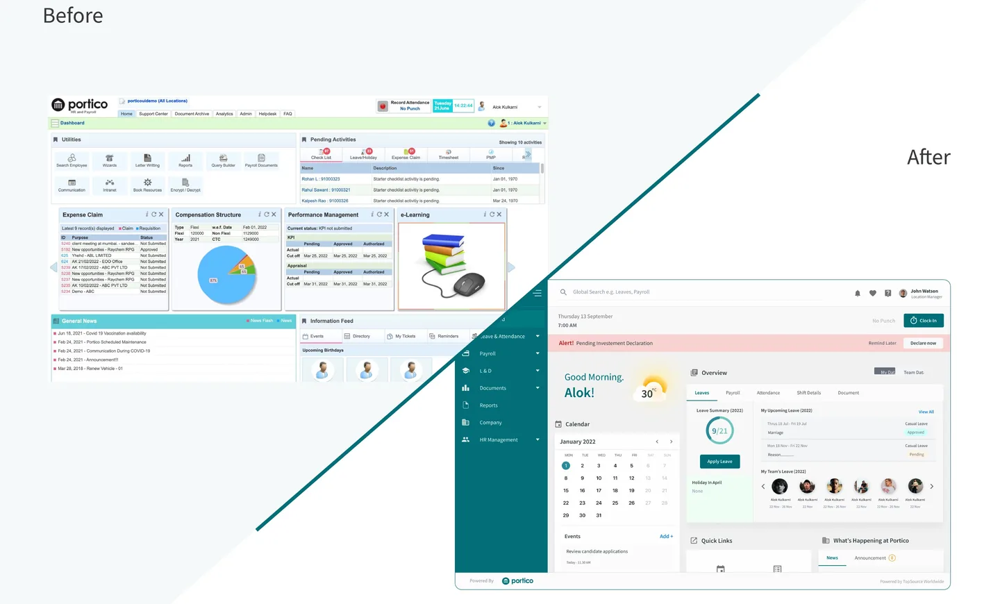

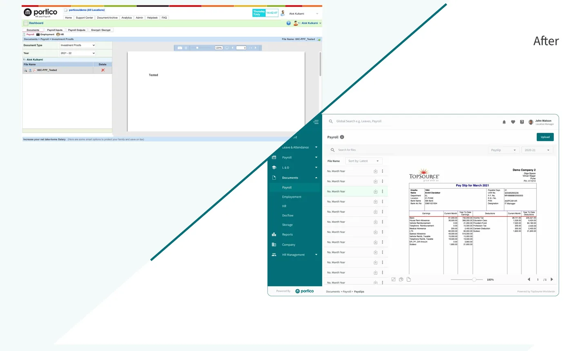

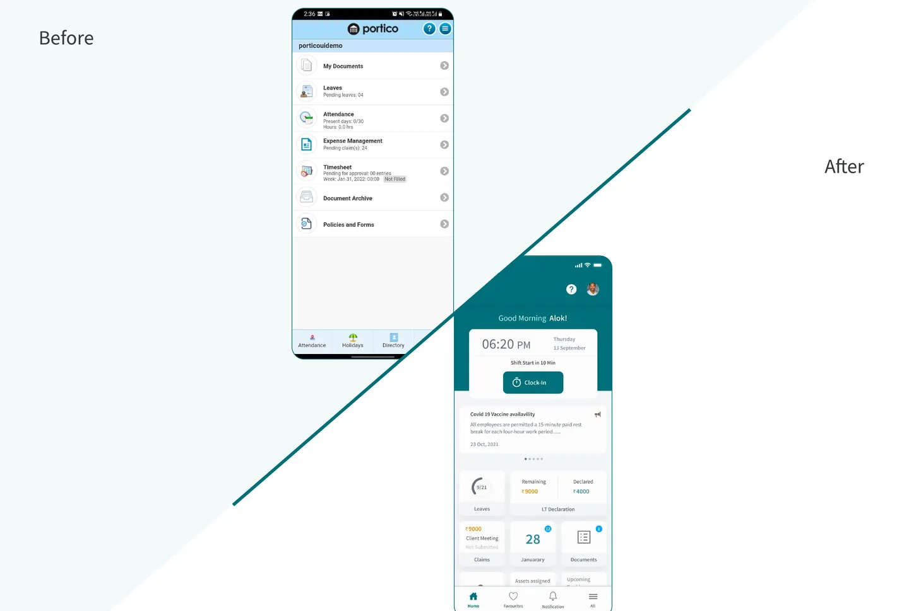

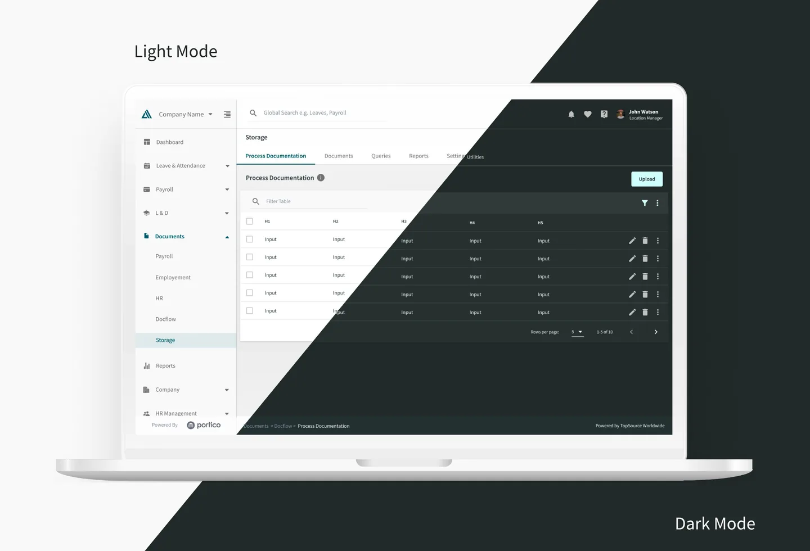

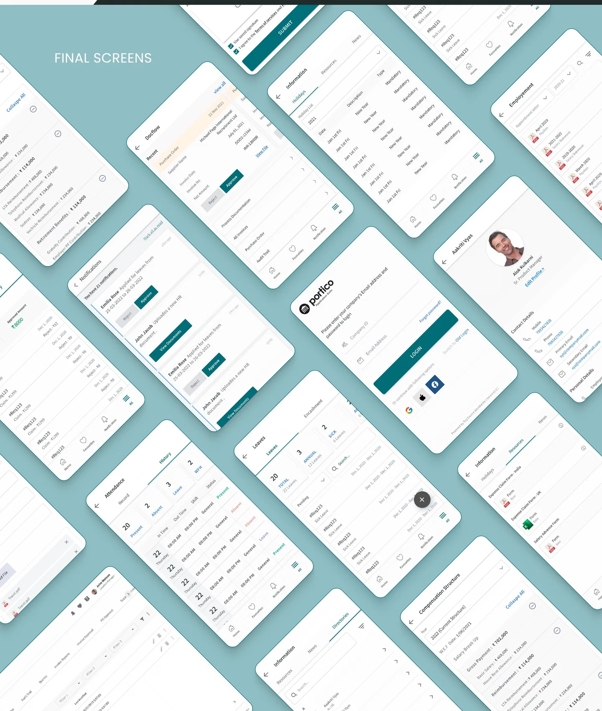
07 · After launch
Regrouping the navigation cut 30% of the steps across core admin tasks. Applying for leave now takes one tap from the home screen's frequent tasks, against four through the full menu (All, Leaves & Attendance, Leaves, then add). Approving a request takes one tap from the notification.
The brief aimed to halve support queries. TopSource didn't share figures after launch, so I can't say whether that target was met.
08 · What didn't go to plan
Some of our best improvements didn't ship. Near the end, Portico's product owner left, and decisions about what to build passed to the developers. With a deadline close, they skipped the changes that meant rework.
We agreed a smaller scope that met the deadline, and handed over a prioritised backlog of the remaining UX improvements.
09 · What I'd do next
Push for users earlier, and lock the phases in from day one.
Next time I would set up the phased plan at the very start, so every improvement has a slot on the schedule instead of being traded away at the end.